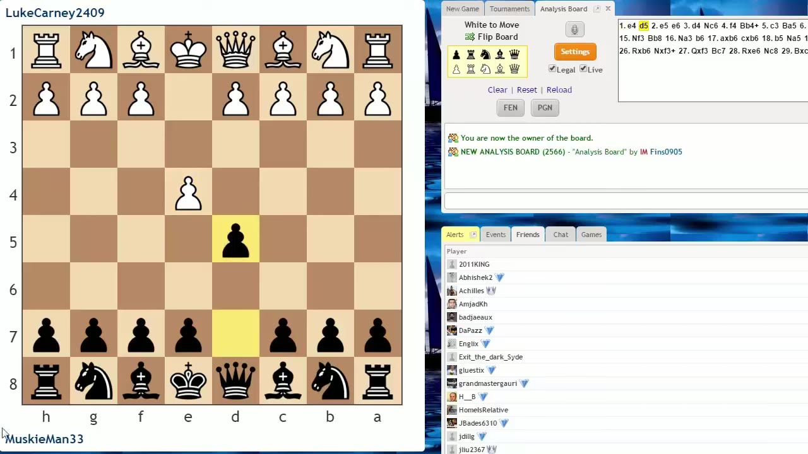
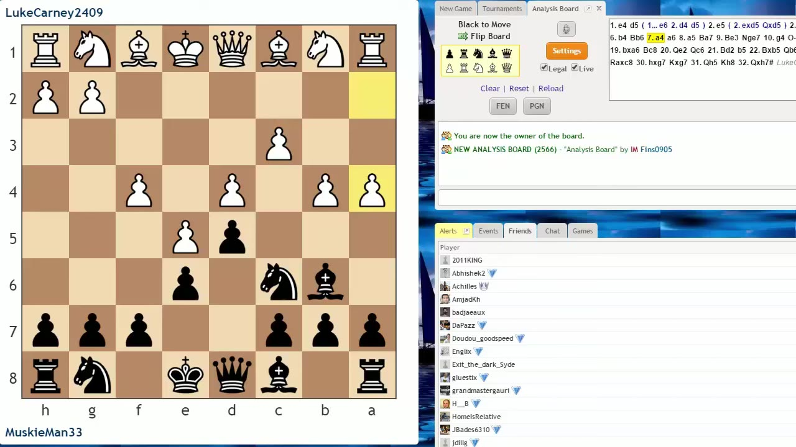
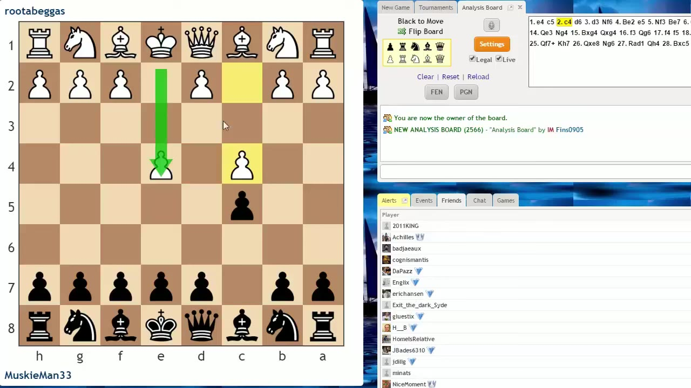

Asianometry brings his student Zach into the frame — reviewing three real games where the same mistakes (undefended pieces, poor coordination, ignoring squares) show up again and again, then putting him on camera for live blitz games where the patterns repeat in real time.
Watch on YouTubeAsianometry opens with a trick question: a position where Zach, playing white, saw a queen sacrifice (Qxh6) leading to Rook on h6+ and mate in two — but missed that after Bxh6, Black gets check with their own rook. The same kind of oversight happens at the master level; world champions have fallen for it.

Zach (black) vs. Luke Carney. Zach plays the Scandinavian on his own, then faces an opponent who pushes almost every pawn in the opening. Instead of fighting with pawn breaks, Zach shuttles his bishop around the queenside (Bf5→Bb4+→Ba5→...), giving White tempo after tempo as each pawn push kicks his piece deeper.

There's a good rule of thumb: if you're thinking about moving a minor piece into your opponent's half early and they can just push a pawn to kick it away, it's almost never a good move.— Asianometry
The turning point: Zach has a clear pawn break with f6, opening the center and leveraging his development lead. He plays f6 (good!) but then abruptly switches to f5, closing the position and neutering his own advantage.
Zach (black) vs. Rud Begas. This game introduces the big leap in chess thinking: from pieces to squares. When White plays c4, they weaken the d4 square — it can no longer be contested by a pawn, only a piece. That makes d4 a prime outpost.

When you start thinking in terms of squares rather than pieces, that's a big step in your chess development.— Asianometry
The d4 square dominates the game: Zach eventually plants a knight there, and the analysis shows how a knight on an unchallengable outpost can completely reverse the position evaluation — knight dominates bishop, knight can never be exchanged.
Zach plays blitz against Herard Feliz (~125 points higher rated). The opening goes sideways: Zach moves pieces multiple times (bishop back and forth), leaves the b7 pawn undefended, and plays f6 (the "forget about it" pawn) when e5 would have sufficed.
The critical moment: after ...e5, White has a discovered attack on the undefended d5 knight — both knights can capture on e5, opening different lines to the same target. White finds it; Zach loses two pawns and can't castle.
Despite being down material, Zach fights on and eventually gets a swindle win when White overlooks the bishop on b7 — queen to d1 check, queen to f1 mate. A turnaround, but the path there was full of missed threats.
Zach (white) vs. gm2 Gonzalez. A more coherent game: Zach builds a reverse-Stonewall setup, coordinates his pieces, and finds the e4 pawn break at exactly the right moment — a double attack on the queen and knight that wins material.
When you're opening up a position and trying to capitalize on a lead in development, often the best way to do that is with a pawn break.— Asianometry
The game then explodes with tactical complications — black's bishop on b7 creates threats on g2, and after a queen sacrifice and counter-sacrifice, material evens out with opposite-piece imbalances (queen + pawn vs. two rooks).
Zack (white) vs. Matilda (1114). A Queen's Gambit Declined where Zack shows real progress. He castles early (by move 7), keeps his pawn structure coherent (c6, d5, e6 chain), pins white's bishop, and wins the exchange with Nd3.
The game gets messy at the end with both kings under attack, but the opening was a massive step forward. The pawn on c6 at the base of the chain is the right structure — it's not easy for white to get at that base point.
You can know all the concepts and still blunder them. The gap between knowing and noticing is where improvement happens.— Asianometry
The video's core message isn't about new concepts — it's about the difficulty of noticing the same mistakes in real games even when you can identify them in review. Zach is Asianometry's student; he's watched the previous two videos, knows the theory, and still makes these errors over the board. That's the reality for virtually every player below 1500.